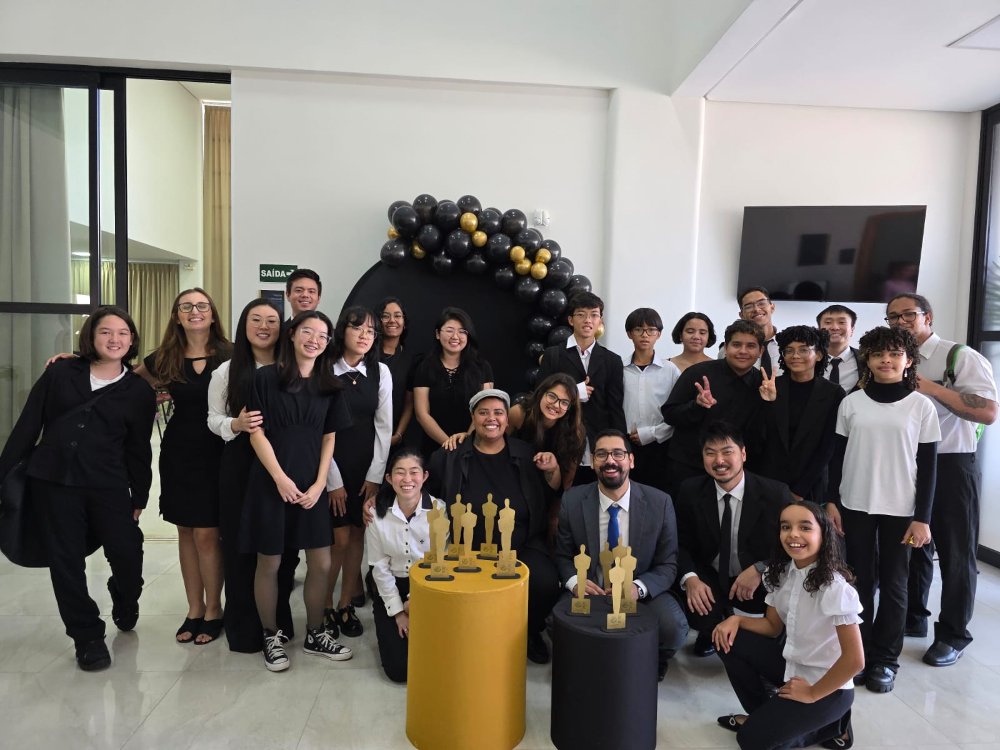

O Som da Esperança
Nossos jovens músicos dedicam-se incansavelmente para entoar o maravilhoso som da esperança. Através de uma genuina felicidade e com o coração transbordando de humanismo, atuam no palco da vida de maneira épica em prol da transformação do sofrimento em esperança, através da música.